01Сборка
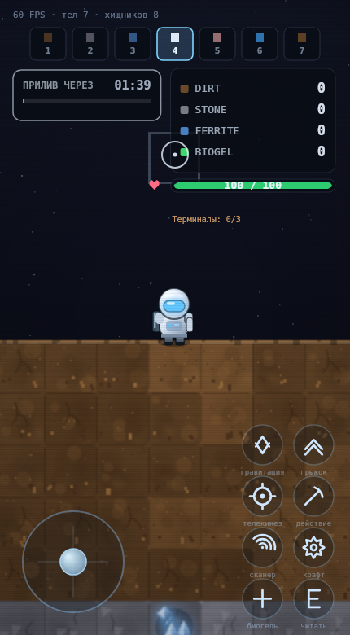
GRAVITY: VOID — M7
ПК: A / D — идти · Space — прыжок · F — гравитация · колесо — режимы ·
ЛКМ — действие · ПКМ — телекинез · C — крафт · Q — сканер · E — читать
Телефон: джойстик слева, восемь кнопок справа, можно бежать и прыгать одновременно
02Критерии M7
| Критерий | Как сделано | |
|---|---|---|
| Баг с улетающим ящиком исправлен | Лимит скорости в захвате 400 px/s (было 950 — как у свободного падения), отдельное демпфирование 26, цель притяжения не ближе 34 px к центру игрока, при отпускании остаётся 20 % скорости, ящик разводится с игроком по массам. Замер: 950 → 400 px/s, прыжок за кадр 15.8 → 6.7 px | да |
| Колесо мыши переключает режимы | Вниз — следующий, вверх — предыдущий, по кругу 1→7→1. Цифры 1–7 остались.
Очередь щелчков разбирается в update, при крафте колесо не работает |
да |
| Слот режима пульсирует при смене | modeSwitchT 0.45 с: активный слот раздувается на 3 px и подсвечивается
ореолом, затем гаснет |
да |
| На мобильном джойстик и кнопки | Определение по (pointer: coarse) или maxTouchPoints.
Джойстик слева (аналоговый, мёртвая зона 16 %), 8 кнопок справа, все ≥ 48 px
с отступом 20 px. Портрет — сетка 2×4, ландшафт — 4×2 |
да |
| Мультитач: движение + прыжок | Каждый палец ведёт свой элемент по identifier; тач кормит те же клавиши,
что клавиатура. Тест: джойстик держит vx > 60, второй палец даёт
vy < −100, джойстик при этом не отбирается |
да |
| Кнопки не перекрывают HUD | Тест: верх кнопок ниже низа HUD-столбца. Панель прилива на тач-устройстве переехала в левый верхний угол — правый низ занят кнопками, правый верх ресурсами | да |
| HUD крупнее, подсказки клавиш скрыты | Шрифты HUD ×1.2, панель ресурсов шире на 15 %; плашка A / D / Space
на тач-устройстве не рисуется вовсе |
да |
review.html обновлён |
Эта страница | да |
03Что работает
Ящик больше не выстреливает
- Скорость в захвате ограничена 400 px/s — это в 2.4 раза медленнее свободного падения и медленнее, чем летит брошенный лазером обломок.
- Цель притяжения не заходит в центр игрока: при наведении на себя ящик останавливается рядом, а не получает рывок в обратную сторону.
- Отпустил ПКМ — осталось 20 % скорости, тело сразу подчиняется гравитации.
- Ящик, который едет в игрока, толкает его по массам (3 : 1), а не проходит насквозь.
Колесо мыши
- Семь режимов по кругу: копать, строить, снос, якорь, верстак — без отрыва от мыши.
- Три щелчка подряд листают три режима, а не один: очередь копится и разбирается за кадр.
- Активный слот пульсирует — видно, что смена произошла, даже краем глаза.
- Открыт крафт — колесо молчит, режимы не листаются под меню.
Джойстик и кнопки
- Джойстик аналоговый: нажал на треть — идёшь в треть скорости, а не рывком.
- Восемь кнопок: прыжок, гравитация, действие, телекинез, крафт, сканер, чтение, биогель.
- Иконки нарисованы векторами, поэтому не превращаются в квадратики в чужом шрифте.
- Нажатие вспыхивает: ореол + заливка + белая иконка на 0.16 с.
Мультитач
- Бег джойстиком и прыжок вторым пальцем — одновременно, без потери одного из них.
- Отпускание кнопки не сбрасывает движение, отпускание джойстика не мешает прыжку.
- Свободный палец в правой части экрана ставит прицел под палец и держит действие: копать можно, не целясь мышью.
Тач-UX
- Первый тап убирает «Тапните для старта» и просит полноэкранный режим — только из жеста браузер это и разрешает.
- Панель прилива ушла в левый верхний угол, чтобы не спорить с кнопками и ресурсами.
- Меню крафта масштабируется целиком: на 430×780 панель сжата до 0.81, все четыре строки и цены видны.
- Прицел на телефоне — кольцо радиусом 16 px: палец закрывает точку, целиться надо по кольцу.
ПК не пострадал
- На ПК тач-слой не создаётся вовсе: ни обработчиков, ни отрисовки, ни лишних объектов.
- Профиль даже чуть легче M6: p50 8.30 против 8.77 мс.
- Все прежние проверки зелёные, поправлен один тест — и он вернулся к прежнему виду.
04Дефекты и ограничения
На телефоне неудобно менять режим
- Режимы остались только на плашке сверху — это тап по слоту 44 px, и он не всегда попадает с первого раза. Джойстик листает ходьбу, а не режимы.
- Это главный кандидат на доработку: жест двумя пальцами по джойстику или крупная кнопка «режим» с меню.
Телекинез на телефоне — два пальца
- Нужно поставить прицел свободным пальцем и держать кнопку «◎»: одна рука не справится.
- Припуск на попадание 22 экранных px частично спасает, но это обход, а не решение.
Сброса мира на телефоне нет
Backspaceостался единственным способом начать заново — на телефоне приходится перезагружать страницу.- Осознанно не добавлял: сброс мира без подтверждения на телефоне слишком легко нажать.
Определение тача грубое
- Ноутбук с тачскрином получит экранные кнопки и скроет подсказки клавиатуры, хотя играть на нём будут мышью.
- Лечится переключателем «тач/мышь», но в спеке его нет — не добавлял самовольно.
Полноэкранный режим в песочнице не срабатывает
- Если игра открыта во фрейме без
allowfullscreen, запрос отклоняется. Игра продолжает работать — подсказка просто исчезает. - В отдельной вкладке (
index.html) работает как надо.
Регрессия
- Все 288 проверок M0–M6 зелёные. Один тест пришлось откатить:
drawHudна время стал обёрткой с масштабированием, и проверка «в HUD есть полоска здоровья» перестала его видеть. Масштаб сделал по шрифтам (fs()), обёртку убрал, тест вернулся к прежней формулировке — подгонки нет.
05Скоуп
| Что | Почему так | Что делать |
|---|---|---|
| Тач-слой рисуется в Canvas, а не DOM решение по спеке |
Спека прямо просит Canvas «чтобы сохранить единый стиль». Плюс DOM-кнопки перехватили бы события мыши на канвасе и ломали бы управление на гибридных устройствах. | Фиксирую. |
| Тач кормит те же клавиши архитектура |
Один источник истины: тесты ПК-управления покрывают и мобильное, а физика прыжка с coyote-time не потребовала ни одной правки. | Фиксирую. |
| Восемь кнопок, а не пять из спеки расширение |
В спеке пять (прыжок, гравитация, действие, телекинез, крафт/сканер). Пришлось разделить крафт и сканер (это разные действия) и добавить чтение терминала и биогель — без них половина игры на телефоне недоступна. | Можно сократить до пяти, если решите, что плотно. |
| Лимит скорости 400 px/s из спеки |
В спеке «например, не более 400 px/s». Взял ровно это значение — оно оказалось разумным: медленнее игрока (265 px/s бега не превышает 400 с запасом на рывок). | Число в CFG.tele.holdSpeed. |
| Полноэкранный режим — best effort трактовка |
Спека просит «включить аудио/фуллскрин». Аудио в игре нет вовсе, а фуллскрин браузер разрешает только из жеста и только вне ограничивающего iframe. | Ничего, если в вашем окружении не срабатывает — это ограничение платформы. |
06Запросы ревью
1. Как реализован мультитач?
Слушаю touchstart/move/end/cancel на канвасе
(не на window, чтобы не ловить жесты страницы), но состояние веду не «событиями
для игры», а теми же клавишами, что и клавиатура. Каждый палец — запись в
Map по identifier: джойстик, кнопка или свободный прицел.
Поэтому мультитач получается бесплатно: игра видит Space и touchX
одновременно, а touchend одного пальца не трогает состояние другого.
DOM-кнопки не использовал: они перехватили бы мышь на канвасе, сломали бы управление на
гибридных устройствах и потребовали бы отдельного стиля.
2. Пойман ли баг с ящиком и в чём причина?
Пойман, и причин три. Первая: лимит скорости тела в захвате был
взят из физики падения — 950 px/s, в 2.4 раза быстрее игрока. Вторая: цель
притяжения обрезалась только по радиусу телекинеза, поэтому при наведении на себя она
попадала в центр игрока, разница «цель − тело» проходила через ноль, и знак менялся —
тело получало рывок назад. Третья: releaseGrab не гасил скорость,
и набранные 900+ px/s жили после отпускания. Плюс ящик не сталкивался с игроком.
Замер до: 950 px/s и прыжок 15.8 px за кадр. После: 400 px/s, 6.7 px, после отпускания 20 %.
3. Что ещё вынести на экранные кнопки?
Восемь кнопок — это предел, дальше экран превращается в пульт. Не хватает трёх вещей: переключателя режимов (сейчас тап по маленькой плашке сверху — самое слабое место раскладки), паузы и сброса мира, которого на телефоне нет вовсе. Спорный кандидат — сделать телекинез одним пальцем («палец тянет ящик» без кнопки), но это уже переделка логики захвата, а не интерфейса.
07Скриншоты
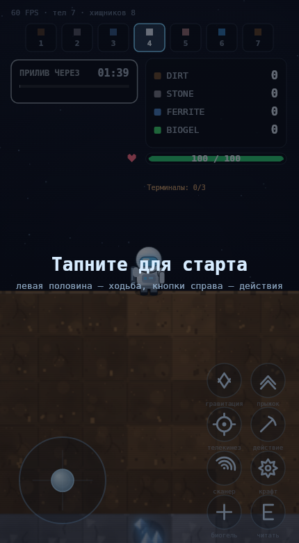
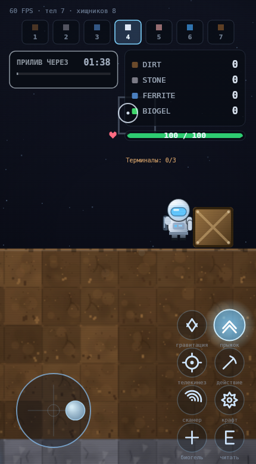
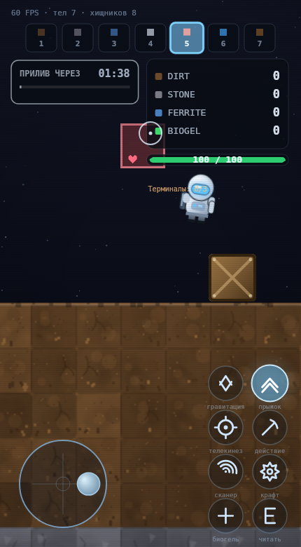
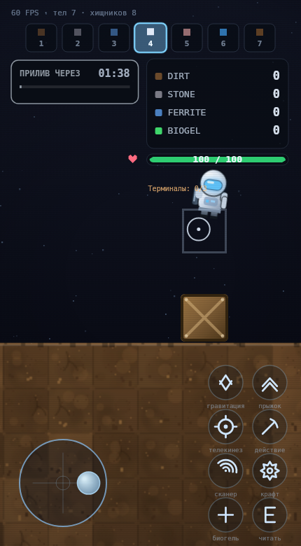
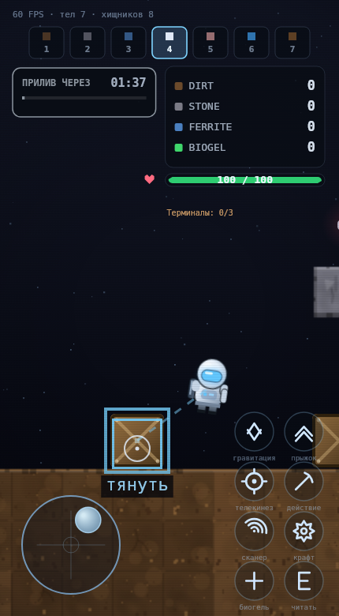
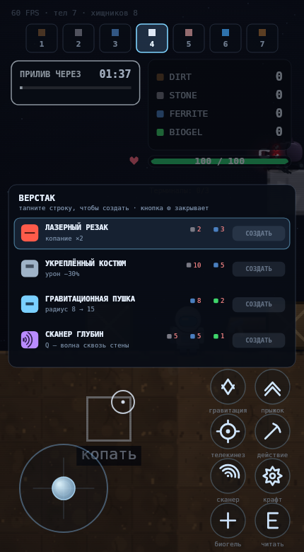
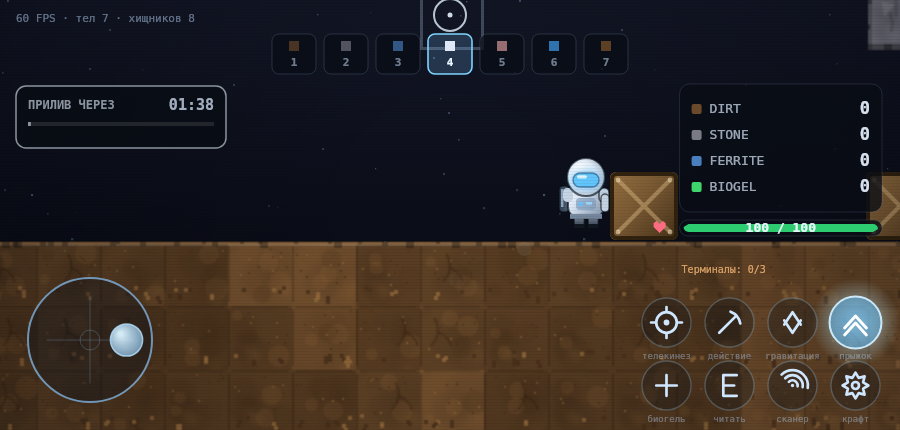
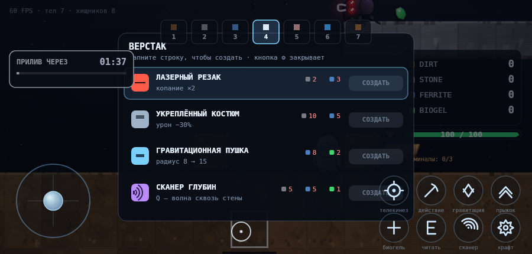

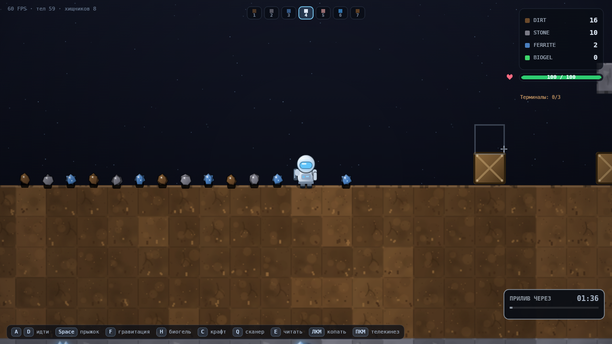
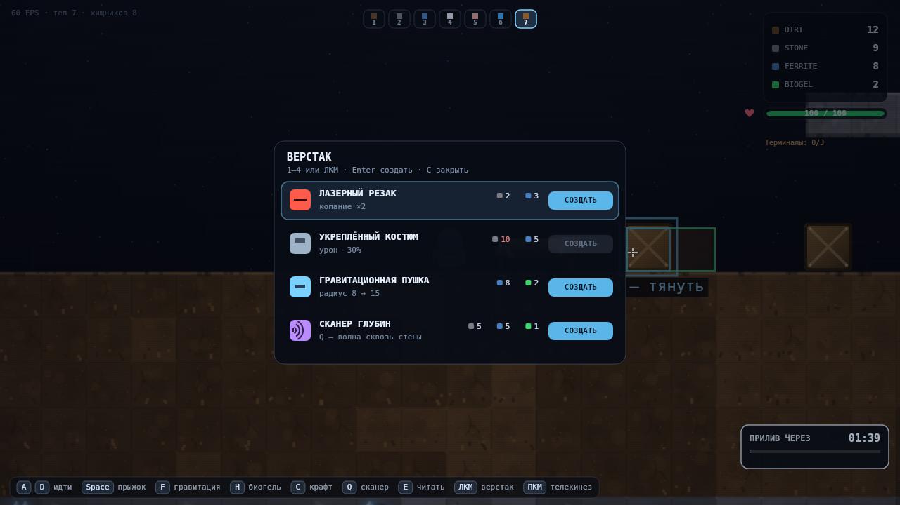


08Как проверено
# 344 автопроверки логики, физики, интерфейса и критериев M0–M7 cd tools node verify.mjs # → 344/344 проверок пройдено node screenshots.mjs # → 34 кадра ПК-версии node touch-shots.mjs # → 7 кадров мобильной (430×780) SUF=-land TW=900 TH=430 node touch-shots.mjs # → +7 кадров в ландшафте node perf.mjs # → p50 8.30 мс, p95 10.43 мс на кадр node verify-review-page.mjs # → структура страницы и запуск игры во фрейме
Что покрыто в M7
- Захват: 120 кадров гулящей цели — скорость не выше
holdSpeed, прыжок за кадр в пределах шага, лимит ниже лимита свободного падения. - Отпускание: 900 px/s превращаются в ≤ 80, гравитация возвращается, тело не разгоняется.
- Коллизия: тяга «строго в игрока» — минимальная дистанция больше габарита пары.
- Колесо: вперёд, назад, через край в обе стороны, три щелчка = три режима, при крафте молчит.
- Пульсация слота включается и затухает, цифры 1–7 живы.
- Тач: определение устройства, 8 кнопок, ≥ 48 px, отступ 20 px, джойстик слева, кнопки ниже HUD, HUD ×1.2, клавиатурные подсказки скрыты, ландшафт перестраивается.
- Мультитач: бег + прыжок, джойстик не отбирается, отпускание кнопки не сбрасывает бег.
- Кнопки жмут и отпускают ровно свои клавиши, дают вспышку; на ПК тач-слой выключен.
- Крафт: панель влезает в экран, на узком масштабируется, попадание с тем же масштабом.
Чего проверки не делают
- Не проверяют на реальном телефоне: тач-события эмулируются в headless, браузерные жесты (свайп от края, зум) не воспроизводятся.
- Не проверяют удобство пальца: «попадает ли большой палец в кнопку» — только руками.
- Не ловят конфликт с системными жестами iOS/Android.
- Не браузерный FPS: цифры — время JS+draw в headless-canvas.